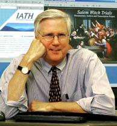

IATH takes scholarship into the
21st century
IATH takes scholarship into the
21st century
By Jon Bowen, A&S Online, September 2003
On September 18, 1692, Giles Cory was "pressed to
death" after being accused of witchcraft. While all the other men
and women who died in the Salem Witch Trials were hanged, Cory
refused a trial by jury and thus got the dreaded sentence of
peine forte et dure , which calls for rocks to be piled on
top of the accused until he expires under the load. In Cory's case,
it took two days. Obstinate to the end, his last words were, "More
weight!"
Twenty years ago, a scholar digging into Cory's life and death
would've had to trudge all over the Northeast to visit the
half-dozen libraries and historical societies that house the myriad
documents, maps and images related to the Salem Witch Trials.
Scholars of
today just visit Benjamin Ray's website .
Ray, working through U.Va.'s Institute for Advanced Technology in
the Humanities (IATH), has created a digital documentary archive
and transcription project that gathers and centralizes data on the
Salem Witch Trials for students, scholars and witchcraft
aficionados everywhere. "The computer is your collaborative
research environment par excellence," Ray said. With the Salem
Witch Trials project, "You have people getting in this research
sandbox, in a moderated way, and getting excited about advancing a
scholarly project."
The players in Ray's sandbox include Bernard Rosenthal, an English professor at the University of Binghamton who serves as editor-in-chief of transcriptions; a team of managers, editors and assistants working at universities in the United States, Sweden and Finland; and the technical experts on IATH's staff who do the behind-the-scenes work that makes the website run.
The Salem Witch Trials website is just one of the jewels in IATH's crown. Other research projects sponsored by the Institute include Ed Ayers' The Valley of the Shadow ; Stephen Railton's Uncle Tom's Cabin and American Culture ; Jerome McGann's Rossetti Archive ; as well as more than 40 other digital projects, in various stages of completion, covering music, linguistics, ethics, architecture and more.